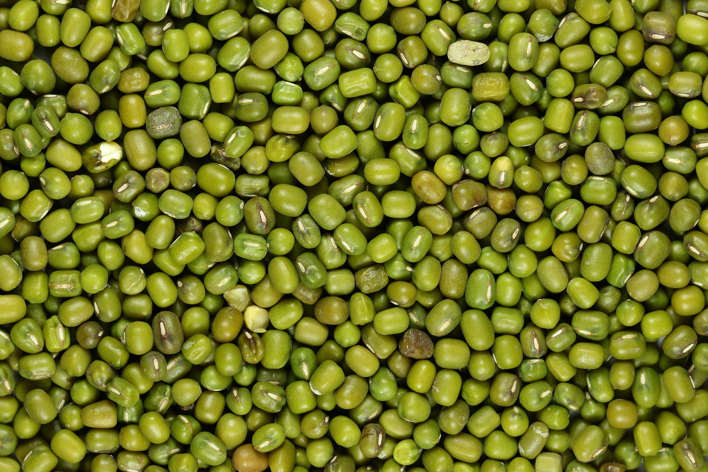

Beans = Munged
The mung bean or green gram (Vigna radiata) is a plant species in the legume family.[2][3] The mung bean is mainly cultivated in East, Southeast and South Asia.[4] It is used as an ingredient in both savoury and sweet dishes.Mung bean (Vigna radiata) is a plant species of Fabaceae and is also known as green gram.[10] It is sometimes confused with black gram (Vigna mungo) for their similar morphology, though they are two different species.[11] The green gram is an annual vine with yellow flowers and fuzzy brown pods. There are three subgroups of Vigna radiata, including one cultivated (Vigna radiata subsp. radiata) and two wild ones (Vigna radiata subsp. sublobata and Vigna radiata subsp. glabra). It has a height of about 15–125 cm (5.9–49.2 in).[12] Mung bean has a well-developed root system. The lateral roots are many and slender, with root nodules grown.[13] Stems are much branched, sometimes twining at the tips. Young stems are purple or green, and mature stems are grayish-yellow or brown. They can be divided into erect cespitose, semi-trailing and trailing types.[13] Wild types tend to be prostrate while cultivated types are more erect.[12] - Wikipedia
